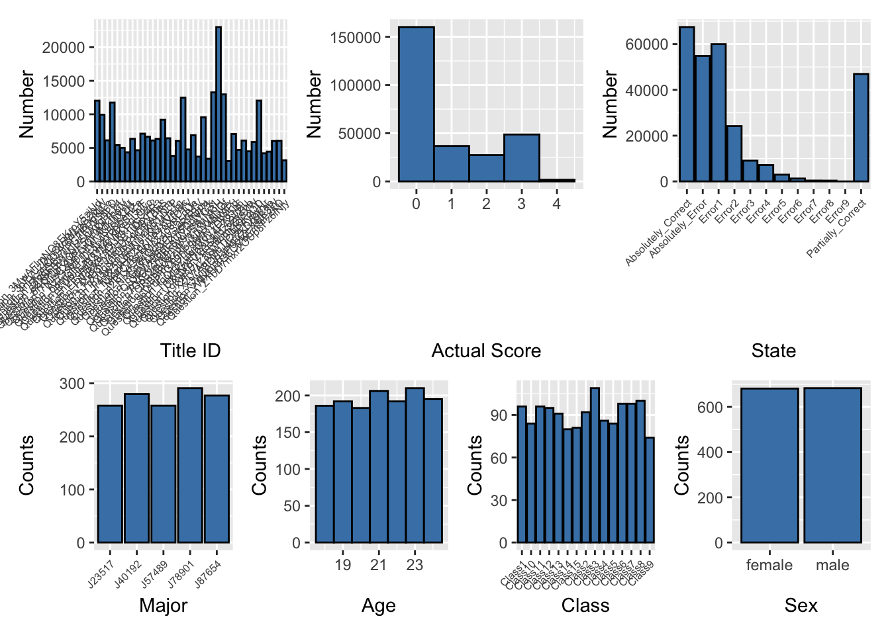
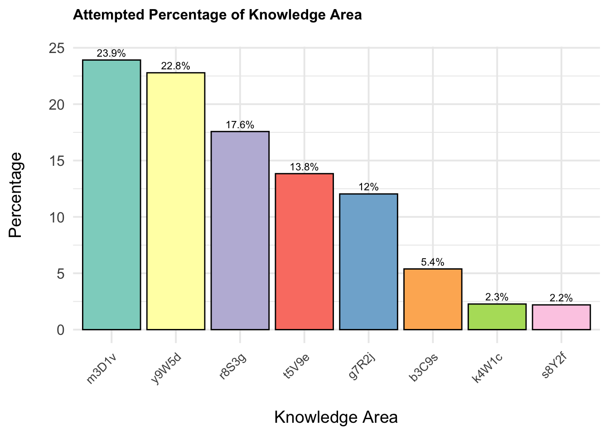
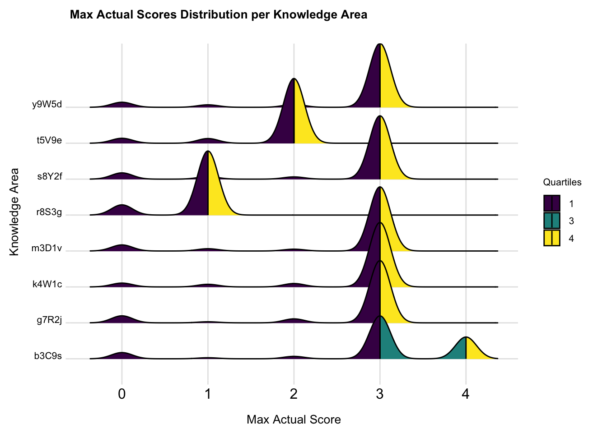
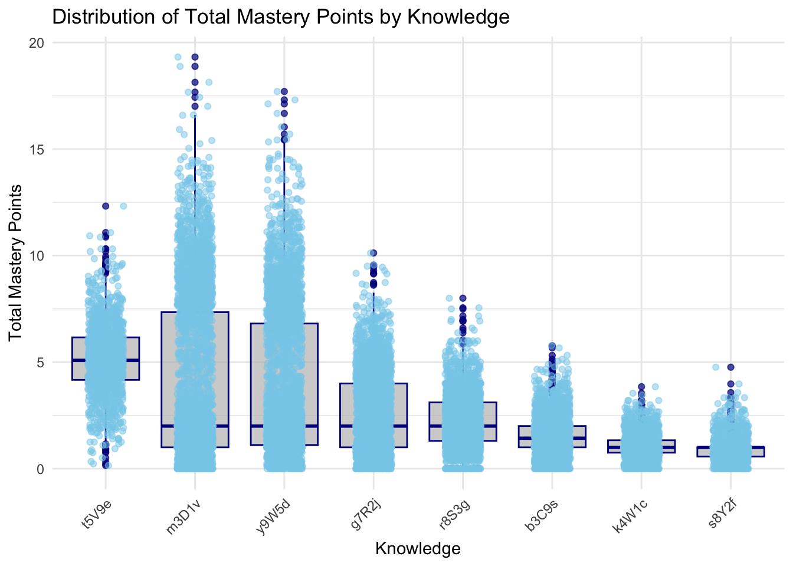
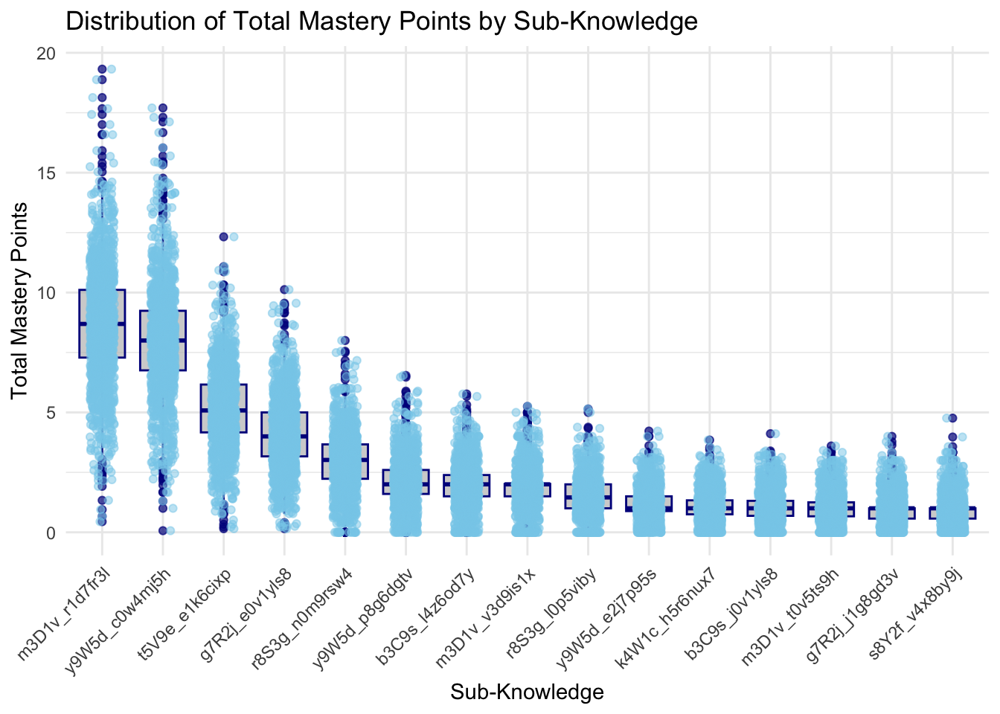

pacman::p_load(dplyr,tidyr,stringr,readr,fs,purrr,ggplot2, plotly, ggstatsplot,igraph,lubridate,hms, vcd)Take-home Exercise 3
1. Overview
NorthClass, a prominent higher education institution with over 300,000 registered learners, offers more than 100 courses across various disciplines. To enhance its digital age competitiveness, NorthClass launched a programming course requiring learners to complete tasks with multiple submissions. Post-course, the institution collects learning data to assess instructional quality. NorthClass plans to form a Smart Education Development and Innovation Group to leverage AI for improving education and nurturing innovative talents. Visualization and Visual Analytics are proposed to transform complex learning data into intuitive graphical representations, aiding in diagnosing knowledge mastery, monitoring learning trends, and identifying factors causing learning difficulties. The task is to design and implement a Visual Analytics solution to help NorthClass perceive learners’ progress and provide recommendations for teaching strategy adjustments and course design improvements.
2. Our Task
From the Challenge, the key problem statement was to perform a comprehensive analysis of multiple datasets that describe various aspects of the learner’s profile, learning patterns and status, to derive key insights to enhance teaching strategies and course design.
Consequently the key requirements based on the 5 stipulated tasks in the challenge were as follows.
Task 1: To provide a quantitative assessment of the learners’ knowledge mastery and identify weak links in their knowledge system, based on the multi-dimensional attributes such as answer scores and answer status in the learners’ log records of the learners’ question-answering behaviors.
This would entail an analysis of the learners’ aggregate performance in their programming tasks (a.k.a. questions in the dataset), including measures of central tendency, or any notable patterns that can glean insights towards knowledge mastery and weaknesses from the given datasets.
3. The Datasets
The provided materials for the challenge include 3 datasets described below, as well as a separate document providing a more detailed description of the data and variables
Dataset 1: Student Information - This comprises of 5 Cols, 1364 Rows, providing individualised demographic variables of the learners (a.k.a students) within the scope this project
Dataset 2: Learning Subject Title Information - This comprises of 5 Cols, 44 Rows, providing variables of the questions from the programming tasks which are collated in the scope of this project
Dataset 3: Class Submission Records - This comprises of multiple datasets, each with 10 Cols and various number of rows, providing supposedly the participating learners’ answering variables to the questions collated in the scope of this project
4. Methodology
Our methodology systematically integrates data collection, data processing, analysis, pattern mining, modeling, and recommendations to create a comprehensive Visual Analytics solution for improving teaching strategies and course designs at NorthClass Institute, showing as below: 
5. Getting Started
5.1 Loading R packages
The code chunk below imports the dataset into R environment by using read_csv() function of readr package. readr is one of the tidyverse package.
Read the individual CSV files into data frames. Check that the structure of each data frame is the same.
5.2 Importing data
The code chunk below imports the dataset into R environment by using read_csv() function of readr package. readr is one of the tidyverse package.
Read the individual CSV files into data frames. Check that the structure of each data frame is the same.
df_StudentInfo <- read_csv("data/Data_StudentInfo.csv")
df_TitleInfo <- read_csv("data/Data_TitleInfo.csv")Click to show code
csv_file_list <- dir('data/Data_SubmitRecord')
csv_file_list <- paste0("./data/Data_SubmitRecord/",csv_file_list)
df_StudentRecord <- NULL
for (file in csv_file_list) { # for every file...
file <- read_csv(file)
df_StudentRecord <- rbind(df_StudentRecord, file) # then stick together by rows
}
df_StudentRecord %>% glimpse()Rows: 232,818
Columns: 10
$ index <dbl> 0, 1, 2, 3, 4, 5, 6, 7, 8, 9, 10, 11, 12, 13, 14, 15, 16, …
$ class <chr> "Class1", "Class1", "Class1", "Class1", "Class1", "Class1"…
$ time <dbl> 1704209872, 1704209852, 1704209838, 1704208923, 1704208359…
$ state <chr> "Absolutely_Correct", "Absolutely_Correct", "Absolutely_Co…
$ score <dbl> 3, 3, 3, 3, 4, 0, 3, 3, 3, 3, 3, 3, 3, 1, 3, 1, 1, 4, 0, 0…
$ title_ID <chr> "Question_bumGRTJ0c8p4v5D6eHZa", "Question_62XbhBvJ8NUSnAp…
$ method <chr> "Method_Cj9Ya2R7fZd6xs1q5mNQ", "Method_gj1NLb4Jn7URf9K2kQP…
$ memory <dbl> 320, 356, 196, 308, 320, 0, 308, 312, 312, 328, 512, 324, …
$ timeconsume <chr> "3", "3", "2", "2", "3", "5", "2", "2", "3", "2", "3", "2"…
$ student_ID <chr> "8b6d1125760bd3939b6e", "8b6d1125760bd3939b6e", "8b6d11257…5.3 Data Preparation
5.3.1 Check Missing Values
First, we identify students who are enrolled in more than one class. This helps us focus on those who need their class assignments reviewed. For students enrolled in multiple classes, we determine the correct class by identifying which class they attended most frequently. Finally, we update the class assignments in the original dataset. We replace the incorrect class values with the correct class determined in the previous step. This ensures that each student is associated with the class they attended most often. #### Missing Data
colSums() and is.NA() functions are used to search for missing values as a whole for the 3 data sets in the code chunks as follows.
#Find the number of missing values for each col
colSums(is.na(df_StudentInfo)) index student_ID sex age major
0 0 0 0 0 #Find the number of missing values for each col
colSums(is.na(df_TitleInfo)) index title_ID score knowledge sub_knowledge
0 0 0 0 0 #Find the number of missing values for each col
colSums(is.na(df_StudentRecord)) index class time state score title_ID
0 0 0 0 0 0
method memory timeconsume student_ID
0 0 0 0 Click to show code
# Step 1: Identify students with multiple classes
students_multiple_classes <- df_StudentRecord %>%
group_by(student_ID) %>%
summarise(unique_classes = n_distinct(class)) %>%
filter(unique_classes > 1)
# Step 2: Identify the correct class for each student (the class with the highest frequency)
correct_classes <- df_StudentRecord %>%
filter(student_ID %in% students_multiple_classes$student_ID) %>%
group_by(student_ID, class) %>%
summarise(count = n()) %>%
arrange(desc(count)) %>%
slice(1) %>%
select(student_ID, correct_class = class)
# Step 3: Replace wrong class values
df_StudentRecord <- df_StudentRecord %>%
left_join(correct_classes, by = "student_ID") %>%
mutate(class = ifelse(!is.na(correct_class), correct_class, class)) %>%
select(-correct_class)
# Display the updated dataframe
print(df_StudentRecord)# A tibble: 232,818 × 10
index class time state score title_ID method memory timeconsume student_ID
<dbl> <chr> <dbl> <chr> <dbl> <chr> <chr> <dbl> <chr> <chr>
1 0 Class1 1.70e9 Abso… 3 Questio… Metho… 320 3 8b6d11257…
2 1 Class1 1.70e9 Abso… 3 Questio… Metho… 356 3 8b6d11257…
3 2 Class1 1.70e9 Abso… 3 Questio… Metho… 196 2 8b6d11257…
4 3 Class1 1.70e9 Abso… 3 Questio… Metho… 308 2 63eef3731…
5 4 Class1 1.70e9 Abso… 4 Questio… Metho… 320 3 5d89810b2…
6 5 Class1 1.70e9 Erro… 0 Questio… Metho… 0 5 5d89810b2…
7 6 Class1 1.70e9 Abso… 3 Questio… Metho… 308 2 5d89810b2…
8 7 Class1 1.70e9 Abso… 3 Questio… Metho… 312 2 47eeab842…
9 8 Class1 1.70e9 Abso… 3 Questio… Metho… 312 3 47eeab842…
10 9 Class1 1.70e9 Abso… 3 Questio… Metho… 328 2 5d89810b2…
# ℹ 232,808 more rowsIdentify students with multiple classes
Click to show code
# Identify students with multiple classes
students_multiple_classes <- df_StudentRecord %>%
group_by(student_ID) %>%
summarise(unique_classes = n_distinct(title_ID)) %>%
filter(unique_classes > 1)
# Display the results
print(students_multiple_classes)# A tibble: 1,362 × 2
student_ID unique_classes
<chr> <int>
1 0088dc183f73c83f763e 38
2 00cbf05221bb479e66c3 38
3 00df647ee4bf7173642f 38
4 0107f72b66cbd1a0926d 38
5 011d454f199c123d44ad 38
6 01558eef77a8d39b7103 38
7 016226278e6a69e10aa4 38
8 01a691413dc5897db83f 38
9 01d8aa21ef476b66c573 38
10 01qkq6w2v62cimidb3b7 35
# ℹ 1,352 more rowsClick to show code
#remove index column
#df_StudentRecord <- df_StudentRecord %>% select(-1)
df_TitleInfo <- df_TitleInfo %>% select(-1)
df_StudentInfo <- df_StudentInfo %>% select(-1)5.3.2 Convert Data Type
The time_change column in the df_StudentRecord dataset is converted from a timestamp to a POSIXct date-time format. This transformation allows for easier manipulation and analysis of time data in subsequent steps.
Click to show code
# Convert time from timestamp to POSIXct
df_StudentRecord$time_change <- as.POSIXct(df_StudentRecord$time, origin="1970-01-01", tz="UTC")
df_StudentRecord <- df_StudentRecord %>%
mutate(
time_change = ymd_hms(time_change),
date = as.Date(time_change),
time = as_hms(format(time_change, "%H:%M:%S")),
score = as.factor(score),
timeconsume = as.numeric(timeconsume)
)
df_TitleInfo <- df_TitleInfo %>%
rename (
question_score = score
)5.3.2 Data Validation
To validate the completeness of student records, we identify any students present in the df_StudentRecord dataset but missing in the df_StudentInfo dataset. This is done using the anti_join function, which performs a left join and returns only those records from df_StudentRecord that do not have a corresponding match in df_StudentInfo.
To clean the dataset, we apply filters to remove records with erroneous or invalid data:
Remove Invalid States: We filter out records with a specific invalid state (
'�������'). This step ensures that only valid state values are retained in the dataset.Remove Invalid Classes: We filter out records with the class labeled as
"class", which is likely a placeholder or erroneous entry. This ensures that only legitimate class values are retained.
Click to show code
missing_students <- anti_join(df_StudentRecord, df_StudentInfo, by = "student_ID")
# Display the missing student IDs
missing_student_ids <- missing_students %>% select(student_ID) %>% distinct()
print(missing_student_ids)# A tibble: 1 × 1
student_ID
<chr>
1 44c7cf3881ae07f7fb3eDunique(df_StudentRecord$state) [1] "Absolutely_Correct" "Error1" "Absolutely_Error"
[4] "Error6" "Error4" "Partially_Correct"
[7] "Error2" "Error3" "Error5"
[10] "Error7" "Error8" "Error9"
[13] "�������" df_StudentRecord <- df_StudentRecord %>%
filter (state != '�������')%>%
filter (class != "class")# Aggregate knowledge and sub_knowledge into lists
title_info_aggregated <- df_TitleInfo %>%
group_by(title_ID, question_score) %>%
summarise(knowledge_list = list(unique(knowledge)),
sub_knowledge_list = list(unique(sub_knowledge)),
.groups = 'drop')
# View the first few rows of the aggregated data to confirm it looks correct
head(title_info_aggregated)# A tibble: 6 × 4
title_ID question_score knowledge_list sub_knowledge_list
<chr> <dbl> <list> <list>
1 Question_3MwAFlmNO8EKrpY5zjUd 2 <chr [1]> <chr [1]>
2 Question_3oPyUzDmQtcMfLpGZ0jW 2 <chr [1]> <chr [1]>
3 Question_4nHcauCQ0Y6Pm8DgKlLo 3 <chr [1]> <chr [1]>
4 Question_5fgqjSBwTPG7KUV3it6O 3 <chr [1]> <chr [1]>
5 Question_62XbhBvJ8NUSnApgDL94 3 <chr [1]> <chr [1]>
6 Question_6RQj2gF3OeK5AmDvThUV 3 <chr [1]> <chr [1]> 5.3.4 Merge data
Click to show code
# Merge StudentInfo with SubmitRecord based on student_ID
merged_data <- merge(df_StudentRecord, df_StudentInfo, by = "student_ID")
# Merge TitleInfo with the already merged data based on title_ID
merged_data <- merge(merged_data, df_TitleInfo, by = "title_ID")
merged_data <- merged_data %>%
rename(
actual_score = score
) %>%
mutate (actual_score = as.numeric(as.character(actual_score)))5.3.5 Point system for knowledge mastery
The point system is designed to quantify a student’s knowledge mastery based on their performance in answering questions. This system awards points based on the correctness of their answers, which helps in tracking their progress and identifying areas that need improvement.Point allocation as below:
Learners will be rewarding 1 point for Absolutely correct Learners will be rewarding Actual score/ Question score points for partially correct Learners will get 0 for Error
Points will be normalized across number of attempts, such that the relative proportion of submissions will be considered rather absolute numbers in parts (a) to (c) above
If learners attained absolutely correct scores, their mastery points will also be multiplied according to the numbers of methods used
adjusted_scores <- merged_data %>%
mutate(points = case_when(
state == "Absolutely_Correct" ~ 1,
state == "Partially_Correct" ~ actual_score / question_score,
TRUE ~ 0 # default case for any unexpected states
))
mastery_scores <- adjusted_scores %>%
group_by(student_ID, title_ID, knowledge, class,sub_knowledge) %>%
summarise(
total_points = sum(points),
total_attempts = n(),
unique_methods = n_distinct(method),
absolutely_correct_methods = sum(points == 1)
) %>%
mutate(
adjusted_points = total_points / total_attempts,
adjusted_points = adjusted_points * ifelse(absolutely_correct_methods > 0, unique_methods, 1)
)
knowledge_mastery <- mastery_scores %>%
group_by(student_ID, class, knowledge, sub_knowledge) %>%
summarise(total_score = sum(adjusted_points)) %>%
left_join(df_StudentInfo %>% select(student_ID, sex, age, major), by = "student_ID") %>%
mutate(age = as.character(age))
knowledge_expanded <- merged_data %>%
separate_rows(knowledge, sep = ",") %>%
mutate(knowledge = str_trim(knowledge))Click to show code
summary(adjusted_scores) title_ID student_ID index class
Length:274490 Length:274490 Min. : 0 Length:274490
Class :character Class :character 1st Qu.: 3975 Class :character
Mode :character Mode :character Median : 7805 Mode :character
Mean : 8007
3rd Qu.:11646
Max. :20201
time state actual_score method
Length:274490 Length:274490 Min. :0.0000 Length:274490
Class1:hms Class :character 1st Qu.:0.0000 Class :character
Class2:difftime Mode :character Median :0.0000 Mode :character
Mode :numeric Mean :0.8886
3rd Qu.:2.0000
Max. :4.0000
memory timeconsume time_change
Min. : 0 Min. : 1.000 Min. :2023-08-31 08:46:23.00
1st Qu.: 188 1st Qu.: 3.000 1st Qu.:2023-10-08 11:14:49.00
Median : 324 Median : 4.000 Median :2023-10-30 07:43:23.50
Mean : 343 Mean : 8.962 Mean :2023-11-01 00:26:44.49
3rd Qu.: 356 3rd Qu.: 5.000 3rd Qu.:2023-11-25 10:22:52.75
Max. :65536 Max. :400.000 Max. :2024-01-25 04:58:46.00
NA's :2959
date sex age major
Min. :2023-08-31 Length:274490 Min. :18.00 Length:274490
1st Qu.:2023-10-08 Class :character 1st Qu.:19.00 Class :character
Median :2023-10-30 Mode :character Median :21.00 Mode :character
Mean :2023-10-31 Mean :21.06
3rd Qu.:2023-11-25 3rd Qu.:23.00
Max. :2024-01-25 Max. :24.00
question_score knowledge sub_knowledge points
Min. :1.000 Length:274490 Length:274490 Min. :0.0000
1st Qu.:2.000 Class :character Class :character 1st Qu.:0.0000
Median :3.000 Mode :character Mode :character Median :0.0000
Mean :2.533 Mean :0.3306
3rd Qu.:3.000 3rd Qu.:0.6667
Max. :4.000 Max. :1.0000
saveRDS(adjusted_scores, file = "adjusted_scores.RDS")# Calculate the total number of knowledge groups
total_knowledge_groups <- knowledge_mastery %>%
pull(knowledge) %>%
unique() %>%
length()
# Calculate total scores for each student
total_scores <- knowledge_mastery %>%
group_by(student_ID, class) %>%
summarize(total_score = sum(total_score, na.rm = TRUE)) %>%
ungroup()
# Calculate overall mastery by dividing the total score by the total number of knowledge groups
overall_mastery <- total_scores %>%
mutate(overall_mastery = total_score / total_knowledge_groups) %>%
filter (total_score > 1) %>%
left_join(df_StudentInfo %>% select(student_ID, sex, age, major), by = "student_ID") %>%
mutate(age = as.character(age))
# View the overall mastery for each student
print(overall_mastery)# A tibble: 1,362 × 7
student_ID class total_score overall_mastery sex age major
<chr> <chr> <dbl> <dbl> <chr> <chr> <chr>
1 0088dc183f73c83f763e Class2 46.4 5.80 female 20 J40192
2 00cbf05221bb479e66c3 Class10 42.3 5.29 female 19 J23517
3 00df647ee4bf7173642f Class14 40.9 5.11 male 23 J57489
4 0107f72b66cbd1a0926d Class5 49.6 6.20 female 20 J87654
5 011d454f199c123d44ad Class3 37.9 4.74 male 22 J78901
6 01558eef77a8d39b7103 Class15 43.8 5.48 female 18 J57489
7 016226278e6a69e10aa4 Class4 38.3 4.79 female 22 J78901
8 01a691413dc5897db83f Class13 36.5 4.57 male 18 J57489
9 01d8aa21ef476b66c573 Class1 48.7 6.09 male 18 J87654
10 01qkq6w2v62cimidb3b7 Class6 31.9 3.99 female 19 J57489
# ℹ 1,352 more rowssaveRDS(overall_mastery, file = "overall_mastery.RDS")6.Visualization on Learners Question-Answering Performance
To provide a quantitative assessment of the learners’ knowledge mastery and identify weak links in their knowledge system.
6.1 Overview
Distribution of overview
Click to show code
# Load necessary libraries
library(ggplot2)
library(dplyr)
library(patchwork)
# Ensure actual_score is numeric
merged_data$actual_score <- as.numeric(as.character(merged_data$actual_score))
# Convert necessary columns to factors if they are not numeric
merged_data$title_ID <- as.factor(merged_data$title_ID)
merged_data$state <- as.factor(merged_data$state)
merged_data$method <- as.factor(merged_data$method)
merged_data$class <- as.factor(merged_data$class)
merged_data$sex <- as.factor(merged_data$sex)
merged_data$major <- as.factor(merged_data$major)
merged_data$age <- as.numeric(as.character(merged_data$age))
# Aggregate data by student_ID to ensure unique counts for class, age, sex, and major
unique_students <- merged_data %>%
group_by(student_ID) %>%
summarise(class = first(class),
age = first(age),
sex = first(sex),
major = first(major),
.groups = 'drop')
# Plot distributions
p1 <- ggplot(merged_data, aes(x = title_ID)) +
geom_bar(fill = 'steelblue', color = 'black') +
labs(x = 'Title ID', y = 'Number') +
theme(axis.text.x = element_text(angle = 45, hjust = 1, size = 6))
p2 <- ggplot(merged_data, aes(x = actual_score)) +
geom_histogram(binwidth = 1, fill = 'steelblue', color = 'black') +
labs(x = 'Actual Score', y = 'Number')
p3 <- ggplot(merged_data, aes(x = state)) +
geom_bar(fill = 'steelblue', color = 'black') +
labs(x = 'State', y = 'Number') +
theme(axis.text.x = element_text(angle = 45, hjust = 1, size = 6))
p4 <- ggplot(unique_students, aes(x = major)) +
geom_bar(fill = 'steelblue', color = 'black') +
labs(x = 'Major', y = 'Counts') +
theme(axis.text.x = element_text(angle = 45, hjust = 1, size = 6))
p5 <- ggplot(unique_students, aes(x = age)) +
geom_histogram(binwidth = 1, fill = 'steelblue', color = 'black') +
labs(x = 'Age', y = 'Counts')
p6 <- ggplot(unique_students, aes(x = class)) +
geom_bar(fill = 'steelblue', color = 'black') +
labs(x = 'Class', y = 'Counts') +
theme(axis.text.x = element_text(angle = 45, hjust = 1, size = 6))
p7 <- ggplot(unique_students, aes(x = sex)) +
geom_bar(fill = 'steelblue', color = 'black') +
labs(x = 'Sex', y = 'Counts')
# Combine the plots into one layout
combined_plot <- (p1 | p2 | p3) / (p4 | p5 | p6 | p7)print(combined_plot)
6.2 Pertentage of attempted Knowledge
The plot reveals the distribution of different knowledge areas based on their occurrence percentages. It shows that the knowledge areas are not evenly distributed among the students, with some areas being more prevalent than others.
Click to show code
# Ensure 'knowledge' is a factor
knowledge_expanded$knowledge <- as.factor(knowledge_expanded$knowledge)
# Load necessary libraries
library(ggplot2)
library(dplyr)
# Check the column names in knowledge_expanded
print(colnames(knowledge_expanded)) [1] "title_ID" "student_ID" "index" "class"
[5] "time" "state" "actual_score" "method"
[9] "memory" "timeconsume" "time_change" "date"
[13] "sex" "age" "major" "question_score"
[17] "knowledge" "sub_knowledge" # Calculate the count of questions for each knowledge area
knowledge_counts <- knowledge_expanded %>%
group_by(knowledge) %>%
summarise(count = n(), .groups = 'drop')
# Calculate the total number of questions
total_questions <- nrow(knowledge_expanded)
# Calculate the percentage of questions for each knowledge area
knowledge_percentages <- knowledge_counts %>%
mutate(percentage = count / total_questions * 100)
# Add percentage labels to the data frame
knowledge_percentages <- knowledge_percentages %>%
mutate(label = paste0(round(percentage, 1), "%"))
# Reorder knowledge areas by percentage
knowledge_percentages <- knowledge_percentages %>%
arrange(desc(percentage)) %>%
mutate(knowledge = factor(knowledge, levels = knowledge))
# Create a histogram for knowledge percentages with percentage labels
p_knowledge_histogram <- ggplot(knowledge_percentages, aes(x = knowledge, y = percentage, fill = knowledge)) +
geom_bar(stat = "identity", color = 'black') +
labs(title = 'Attempted Percentage of Knowledge Area', x = 'Knowledge Area', y = 'Percentage') +
scale_fill_brewer(palette = "Set3") +
geom_text(aes(label = label), vjust = -0.5, size = 3, color = "black") +
theme_minimal(base_size = 15) +
theme(
axis.text.x = element_text(angle = 45, hjust = 1, size = 10),
axis.title.x = element_text(size = 14, margin = margin(t = 20)),
axis.title.y = element_text(size = 14, margin = margin(r = 20)),
plot.title = element_text(size = 12, face = "bold", margin = margin(b = 20)),
legend.position = "none"
)print(p_knowledge_histogram)
Tip
The least represented knowledge areas are
4W1c(2.3%) and5Y2f(2.2%). These areas show significantly lower representation compared to the major knowledge areas.The higher percentages in certain knowledge areas suggest that students may be more focused or more frequently exposed to these areas.
6.2 Performance by questions
6.2.1 Static heatmap for average max actual score per question (normalised and non normalised)
Click to show code
library(dplyr)
library(ggplot2)
library(plotly)
# Check the column names in knowledge_expanded
print(knowledge_expanded)# A tibble: 274,490 × 18
title_ID student_ID index class time state actual_score method memory
<chr> <chr> <dbl> <chr> <time> <chr> <dbl> <chr> <dbl>
1 Question_3M… 6b22922bf… 203 Clas… 08:15:03 Erro… 0 Metho… 0
2 Question_3M… 5e89fad73… 3618 Clas… 13:56:50 Part… 1 Metho… 200
3 Question_3M… d72abe041… 839 Clas… 11:18:08 Abso… 0 Metho… 188
4 Question_3M… wwh529n48… 18561 Clas… 08:27:43 Abso… 2 Metho… 340
5 Question_3M… 38357be0a… 3842 Clas… 11:36:29 Part… 1 Metho… 312
6 Question_3M… e3d078239… 8267 Clas… 12:47:37 Part… 1 Metho… 384
7 Question_3M… 3c89c7f1d… 6108 Clas… 15:01:37 Erro… 0 Metho… 0
8 Question_3M… e7feb8599… 2890 Clas… 03:02:21 Abso… 0 Metho… 324
9 Question_3M… f9ef2830c… 10447 Clas… 11:56:48 Abso… 2 Metho… 440
10 Question_3M… e58gk2f3c… 13449 Clas… 01:44:51 Part… 1 Metho… 324
# ℹ 274,480 more rows
# ℹ 9 more variables: timeconsume <dbl>, time_change <dttm>, date <date>,
# sex <chr>, age <dbl>, major <chr>, question_score <dbl>, knowledge <fct>,
# sub_knowledge <chr># Ensure 'actual_score' and 'question_score' are numeric
knowledge_expanded <- knowledge_expanded %>%
mutate(actual_score = as.numeric(actual_score),
question_score = as.numeric(question_score))
# Calculate the normalised highest actual_score for each student for each question and knowledge area
highest_scores <- knowledge_expanded %>%
group_by(student_ID, title_ID, knowledge) %>%
summarise(highest_actual_score = max(actual_score, na.rm = TRUE)/question_score, .groups = 'drop')
# Calculate the normalised average highest actual_score for each title_ID and knowledge area
average_highest_scores <- highest_scores %>%
group_by(title_ID, knowledge) %>%
summarise(average_highest_score = mean(highest_actual_score, na.rm = TRUE), .groups = 'drop')
# Retrieve the question_score for each title_ID and knowledge
average_highest_scores <- average_highest_scores %>%
left_join(knowledge_expanded %>% select(title_ID, question_score) %>% distinct(), by = "title_ID")
# Ensure 'knowledge' is treated as a factor for ggplot2 aesthetics
average_highest_scores <- average_highest_scores %>%
mutate(knowledge = as.factor(knowledge))
# Define the color scale limits based on your data range
color_scale_limits <- range(average_highest_scores$average_highest_score, na.rm = TRUE)
# Create the heatmap using ggplot2 with custom hover text
p_heatmap <- ggplot(average_highest_scores, aes(x = knowledge, y = title_ID, fill = average_highest_score,
text = paste("Avg Highest Score:", round(average_highest_score, 2),
"<br>Question Score:", question_score))) +
geom_tile(color = "white") +
scale_fill_gradient2(low = "blue", mid = "green", high = "red", midpoint = 0.9,
limits = color_scale_limits, name = "Avg Highest Score") +
labs(title = "Normalised Average Highest Actual Score per Knowledge Area per Question",
x = "Knowledge Areas",
y = "Question IDs",
fill = "Avg Highest Score") +
theme_minimal(base_size = 15) +
theme(
axis.text.x = element_text(angle = 45, hjust = 1, size = 10),
axis.text.y = element_text(size = 6),
axis.title.x = element_text(size = 10, margin = margin(t = 15)),
axis.title.y = element_text(size = 10, margin = margin(r = 15)),
plot.title = element_text(size = 8, face = "bold", margin = margin(b = 15)),
legend.title = element_text(size = 8), # Adjust legend title size
legend.text = element_text(size = 8), # Adjust legend text size
legend.key.size = unit(1, "cm"), # Adjust size of the legend keys
legend.position = "right"
)
# Convert the ggplot object to a plotly object for interactivity
p_heatmap_interactive1 <- ggplotly(p_heatmap, tooltip = "text")p_heatmap_interactive1 Click to show code
library(dplyr)
library(ggplot2)
library(plotly)
print(knowledge_expanded)# A tibble: 274,490 × 18
title_ID student_ID index class time state actual_score method memory
<chr> <chr> <dbl> <chr> <time> <chr> <dbl> <chr> <dbl>
1 Question_3M… 6b22922bf… 203 Clas… 08:15:03 Erro… 0 Metho… 0
2 Question_3M… 5e89fad73… 3618 Clas… 13:56:50 Part… 1 Metho… 200
3 Question_3M… d72abe041… 839 Clas… 11:18:08 Abso… 0 Metho… 188
4 Question_3M… wwh529n48… 18561 Clas… 08:27:43 Abso… 2 Metho… 340
5 Question_3M… 38357be0a… 3842 Clas… 11:36:29 Part… 1 Metho… 312
6 Question_3M… e3d078239… 8267 Clas… 12:47:37 Part… 1 Metho… 384
7 Question_3M… 3c89c7f1d… 6108 Clas… 15:01:37 Erro… 0 Metho… 0
8 Question_3M… e7feb8599… 2890 Clas… 03:02:21 Abso… 0 Metho… 324
9 Question_3M… f9ef2830c… 10447 Clas… 11:56:48 Abso… 2 Metho… 440
10 Question_3M… e58gk2f3c… 13449 Clas… 01:44:51 Part… 1 Metho… 324
# ℹ 274,480 more rows
# ℹ 9 more variables: timeconsume <dbl>, time_change <dttm>, date <date>,
# sex <chr>, age <dbl>, major <chr>, question_score <dbl>, knowledge <fct>,
# sub_knowledge <chr># Ensure 'actual_score' and 'question_score' are numeric
knowledge_expanded <- knowledge_expanded %>%
mutate(actual_score = as.numeric(actual_score),
question_score = as.numeric(question_score))
# Calculate the highest actual_score for each student for each question and knowledge area
highest_scores <- knowledge_expanded %>%
group_by(student_ID, title_ID, knowledge) %>%
summarise(highest_actual_score = max(actual_score, na.rm = TRUE), .groups = 'drop')
# Calculate the average highest actual_score for each title_ID and knowledge area
average_highest_scores <- highest_scores %>%
group_by(title_ID, knowledge) %>%
summarise(average_highest_score = mean(highest_actual_score, na.rm = TRUE), .groups = 'drop')
# Retrieve the question_score for each title_ID and knowledge
average_highest_scores <- average_highest_scores %>%
left_join(knowledge_expanded %>% select(title_ID, question_score) %>% distinct(), by = "title_ID")
# Ensure 'knowledge' is treated as a factor for ggplot2 aesthetics
average_highest_scores <- average_highest_scores %>%
mutate(knowledge = as.factor(knowledge))
# Define the color scale limits based on your data range
color_scale_limits <- range(average_highest_scores$average_highest_score, na.rm = TRUE)
# Create the heatmap using ggplot2 with custom hover text
p_heatmap <- ggplot(average_highest_scores, aes(x = knowledge, y = title_ID, fill = average_highest_score,
text = paste("Avg Highest Score:", round(average_highest_score, 2),
"<br>Question Score:", question_score))) +
geom_tile(color = "white") +
scale_fill_gradient2(low = "blue", mid = "green", high = "red", midpoint = 2.5,
limits = color_scale_limits, name = "Avg Highest Score") +
labs(title = "Non-normalised Average Highest Actual Score per Knowledge Area per Question",
x = "Knowledge Areas",
y = "Question IDs",
fill = "Avg Highest Score") +
theme_minimal(base_size = 15) +
theme(
axis.text.x = element_text(angle = 45, hjust = 1, size = 10),
axis.text.y = element_text(size = 6),
axis.title.x = element_text(size = 10, margin = margin(t = 15)),
axis.title.y = element_text(size = 10, margin = margin(r = 15)),
plot.title = element_text(size = 8, face = "bold", margin = margin(b = 15)),
legend.title = element_text(size = 8), # Adjust legend title size
legend.text = element_text(size = 8), # Adjust legend text size
legend.key.size = unit(1, "cm"), # Adjust size of the legend keys
legend.position = "right"
)
# Convert the ggplot object to a plotly object for interactivity
p_heatmap_interactive2 <- ggplotly(p_heatmap, tooltip = "text")p_heatmap_interactive2The plot illustrates the average highest scores students achieve across different knowledge areas. In Knowledge Area b3C9s, Question_FNg8X9v5zcbB1tQrxHR3 stands out with a question score of 4, resulting in a more intense color on the plot. Conversely, Knowledge Area r8S3g has questions with a question score of 1, and Knowledge Area t5V9e has questions with a question score of 2. The remaining questions across other knowledge areas generally have a question score of 2.
Although many scores are displayed in shades of green, indicating a similar range of scores, the color intensity variations provide insights into the relative difficulty and performance across different questions.
6.2.2 Static heatmap for Average of methods used per question
Click to show code
library(dplyr)
library(ggplot2)
library(plotly)
# Check the column names in mastery_scores
print(mastery_scores)# A tibble: 58,510 × 10
# Groups: student_ID, title_ID, knowledge, class [57,151]
student_ID title_ID knowledge class sub_knowledge total_points total_attempts
<chr> <chr> <chr> <chr> <chr> <dbl> <int>
1 0088dc183… Questio… t5V9e Clas… t5V9e_e1k6ci… 1 23
2 0088dc183… Questio… t5V9e Clas… t5V9e_e1k6ci… 1 9
3 0088dc183… Questio… m3D1v Clas… m3D1v_r1d7fr… 4.67 7
4 0088dc183… Questio… g7R2j Clas… g7R2j_e0v1yl… 7.67 22
5 0088dc183… Questio… y9W5d Clas… y9W5d_c0w4mj… 1 1
6 0088dc183… Questio… m3D1v Clas… m3D1v_r1d7fr… 1 1
7 0088dc183… Questio… m3D1v Clas… m3D1v_v3d9is… 1 2
8 0088dc183… Questio… y9W5d Clas… y9W5d_p8g6dg… 1.67 4
9 0088dc183… Questio… r8S3g Clas… r8S3g_n0m9rs… 2 8
10 0088dc183… Questio… y9W5d Clas… y9W5d_e2j7p9… 3.67 11
# ℹ 58,500 more rows
# ℹ 3 more variables: unique_methods <int>, absolutely_correct_methods <int>,
# adjusted_points <dbl># Ensure 'unique_methods' column is numeric if needed
mastery_scores <- mastery_scores %>%
mutate(unique_methods = as.numeric(unique_methods))
# Aggregate data to calculate the average number of unique methods per question and knowledge area
method_counts <- mastery_scores %>%
group_by(student_ID, title_ID, knowledge) %>%
summarise(avg_methods = mean(unique_methods, na.rm = TRUE), .groups = 'drop')
# Further aggregate to get the average number of methods across all students for each title_ID and knowledge
method_counts_summary <- method_counts %>%
group_by(title_ID, knowledge) %>%
summarise(avg_methods = mean(avg_methods, na.rm = TRUE), .groups = 'drop')
# Ensure 'knowledge' is treated as a factor for ggplot2 aesthetics
method_counts_summary <- method_counts_summary %>%
mutate(knowledge = as.factor(knowledge))
# Create the heatmap using ggplot2
p_heatmap <- ggplot(method_counts_summary, aes(x = knowledge, y = title_ID, fill = avg_methods,
text = paste("Knowledge Area:", knowledge,
"<br>Title ID:", title_ID,
"<br>Avg Methods:", round(avg_methods, 2)))) +
geom_tile(color = "white") +
scale_fill_gradient2(low = "white", high = "blue", mid = "green", midpoint = mean(method_counts_summary$avg_methods, na.rm = TRUE), name = "Avg Methods") +
labs(title = "Average Methods used per Knowledge Area per Question",
x = "Knowledge Areas",
y = "Question IDs",
fill = "Avg Methods") +
theme_minimal(base_size = 15) +
theme(
axis.text.x = element_text(angle = 45, hjust = 1, size = 10),
axis.text.y = element_text(size = 8),
axis.title.x = element_text(size = 10, margin = margin(t = 20)),
axis.title.y = element_text(size = 10, margin = margin(r = 20)),
plot.title = element_text(size = 8, face = "bold", margin = margin(b = 20)),
legend.title = element_text(size = 8), # Adjust legend title size
legend.text = element_text(size = 8), # Adjust legend text size
legend.key.size = unit(1, "cm"), # Adjust size of the legend keys
legend.position = "right"
)
# Convert the ggplot object to a plotly object for interactivity
p_heatmap_interactive_method <- ggplotly(p_heatmap, tooltip = "text")p_heatmap_interactive_methodStudents applied more methods in certain knowledge areas, particularly in g7R2j with Question_5fgqjSBwTPG7KUV3it6O, in r8S3g with Question_q7OpB2zCMmW9wS8uNt3H and Question_fZrP3FJ4ebUogW9V7taS, and in t5V9e with Question_3oPyUzDmQtcMfLpGZ0jW and Question_3MwAFlmNO8EKrpY5zjUd. This indicates a higher level of engagement and perhaps complexity in these specific areas and questions.
6.2.3 Static heatmap for Total points per question
Click to show code
library(dplyr)
library(ggplot2)
library(plotly)
# Ensure 'points' is numeric
adjusted_scores <- adjusted_scores %>%
mutate(points = as.numeric(points))
# Calculate total attempts per question per knowledge area for each student
adjusted_scores <- adjusted_scores %>%
group_by(student_ID, title_ID, knowledge) %>%
mutate(attempts = n()) %>%
ungroup()
# Aggregate data to calculate the total points and total attempts per question and knowledge area for each student
total_points_attempts <- adjusted_scores %>%
group_by(student_ID, title_ID, knowledge) %>%
summarise(total_points_sum = sum(points, na.rm = TRUE),
total_attempts = sum(attempts, na.rm = TRUE), .groups = 'drop')
# Further aggregate to get the total points sum and total attempts across all students for each title_ID and knowledge
total_summary <- total_points_attempts %>%
group_by(title_ID, knowledge) %>%
summarise(total_points_sum = sum(total_points_sum, na.rm = TRUE),
total_attempts = sum(total_attempts, na.rm = TRUE), .groups = 'drop')
# Ensure 'knowledge' is treated as a factor for ggplot2 aesthetics
total_summary <- total_summary %>%
mutate(knowledge = as.factor(knowledge))
# Define the color scale limits based on your data range
color_scale_limits <- range(total_summary$total_points_sum, na.rm = TRUE)
# Create the heatmap using ggplot2 with custom hover text
p_heatmap <- ggplot(total_summary, aes(x = knowledge, y = title_ID, fill = total_points_sum,
text = paste("Total Points:", total_points_sum, "<br>Total Attempts:", total_attempts))) +
geom_tile(color = "white") +
scale_fill_gradient2(low = "blue", mid = "green", high = "red", midpoint = mean(color_scale_limits, na.rm = TRUE),
limits = color_scale_limits, name = "Total Points") +
labs(title = "Total Points per Question per Knowledge Area",
x = "Knowledge Areas",
y = "Question IDs",
fill = "Total Points") +
theme_minimal(base_size = 15) +
theme(
axis.text.x = element_text(angle = 45, hjust = 1, size = 10),
axis.text.y = element_text(size = 6),
axis.title.x = element_text(size = 10, margin = margin(t = 15)),
axis.title.y = element_text(size = 10, margin = margin(r = 15)),
plot.title = element_text(size = 8, face = "bold", margin = margin(b = 15)),
legend.title = element_text(size = 8), # Adjust legend title size
legend.text = element_text(size = 8), # Adjust legend text size
legend.key.size = unit(1, "cm"), # Adjust size of the legend keys
legend.position = "right"
)
# Convert the ggplot object to a plotly object for interactivity
p_heatmap_interactive <- ggplotly(p_heatmap, tooltip = "text")# Print the interactive heatmap
p_heatmap_interactiveBased on the point system, there are notable concentrations of total points in various knowledge areas. High Total Points Concentration is observed in the g7R2j knowledge area, particularly for Question_5fgqjSBwTPG7KUV3it6O, which has the highest total points indicated by the darker blue color. This suggests that a significant number of students attempted this question and scored well. Following closely is the t5V9e knowledge area with Question_3MwAFlmNO8EKrpY5zjUd, which has the second highest total points. Middle Points Concentration is seen in several knowledge areas:
In
r8S3gwith Question_q7OpB2zCMmW9wS8uNt3H.In
m3D1vwith Questions_QRm48lXxzdP7Tn1WgNOf and Question_4nHcauCQ0Y6Pm8DgKlLo.In
y9W5dwith Questions_QRm48lXxzdP7Tn1WgNOf, Question_Az73sM0rHfWVKuc4X2kL, and Question_EhVPdmlB31M8WKGqL0wc.
Low Points Concentration is observed in the r8S3g and m3D1v knowledge areas, indicating that these areas may be more challenging for students or less frequently attempted.
6.3 Performance by knowledge
6.3.1 Ridge plot for sum(max actual score per qns) for 8 knowledge normalised
Click to show code
# Load the necessary library
library(dplyr)
# Group by 'title_ID', 'student_ID', and 'knowledge' and find the max 'actual_score' for each group
max_scores <- adjusted_scores %>%
group_by(title_ID, student_ID, knowledge) %>%
summarize(max_actual_score = max(actual_score, na.rm = TRUE))
# Display the result
print(max_scores)# A tibble: 57,151 × 4
# Groups: title_ID, student_ID [50,482]
title_ID student_ID knowledge max_actual_score
<chr> <chr> <chr> <dbl>
1 Question_3MwAFlmNO8EKrpY5zjUd 0088dc183f73c83f763e t5V9e 2
2 Question_3MwAFlmNO8EKrpY5zjUd 00cbf05221bb479e66c3 t5V9e 2
3 Question_3MwAFlmNO8EKrpY5zjUd 00df647ee4bf7173642f t5V9e 2
4 Question_3MwAFlmNO8EKrpY5zjUd 0107f72b66cbd1a0926d t5V9e 2
5 Question_3MwAFlmNO8EKrpY5zjUd 011d454f199c123d44ad t5V9e 2
6 Question_3MwAFlmNO8EKrpY5zjUd 01558eef77a8d39b7103 t5V9e 2
7 Question_3MwAFlmNO8EKrpY5zjUd 016226278e6a69e10aa4 t5V9e 2
8 Question_3MwAFlmNO8EKrpY5zjUd 01a691413dc5897db83f t5V9e 2
9 Question_3MwAFlmNO8EKrpY5zjUd 01d8aa21ef476b66c573 t5V9e 2
10 Question_3MwAFlmNO8EKrpY5zjUd 01qkq6w2v62cimidb3b7 t5V9e 2
# ℹ 57,141 more rows# Load the necessary libraries
library(dplyr)
library(ggplot2)
library(ggridges)
library(viridis) # For the viridis color palette
# Assuming your dataframe is named adjusted_score
# and it has columns 'title_ID', 'student_ID', 'knowledge', and 'actual_score'
# Group by 'title_ID', 'student_ID', and 'knowledge' and find the max 'actual_score' for each group
max_scores <- adjusted_scores %>%
group_by(title_ID, student_ID, knowledge) %>%
summarize(max_actual_score = max(actual_score, na.rm = TRUE), .groups = 'drop')
# Check the aggregated data
print(head(max_scores))# A tibble: 6 × 4
title_ID student_ID knowledge max_actual_score
<chr> <chr> <chr> <dbl>
1 Question_3MwAFlmNO8EKrpY5zjUd 0088dc183f73c83f763e t5V9e 2
2 Question_3MwAFlmNO8EKrpY5zjUd 00cbf05221bb479e66c3 t5V9e 2
3 Question_3MwAFlmNO8EKrpY5zjUd 00df647ee4bf7173642f t5V9e 2
4 Question_3MwAFlmNO8EKrpY5zjUd 0107f72b66cbd1a0926d t5V9e 2
5 Question_3MwAFlmNO8EKrpY5zjUd 011d454f199c123d44ad t5V9e 2
6 Question_3MwAFlmNO8EKrpY5zjUd 01558eef77a8d39b7103 t5V9e 2# Create the ridge plot with quantiles and quartiles
p_ridge_max_scores_quantiles <- ggplot(max_scores, aes(x = max_actual_score, y = knowledge, fill = factor(stat(quantile)))) +
stat_density_ridges(
geom = "density_ridges_gradient",
calc_ecdf = TRUE,
quantiles = 4,
quantile_lines = TRUE
) +
scale_fill_viridis_d(name = "Quartiles") +
labs(title = "Max Actual Scores Distribution per Knowledge Area", x = "Max Actual Score", y = "Knowledge Area") +
theme_ridges() +
theme(
axis.text.y = element_text(size = 8),
axis.title.x = element_text(size = 10, margin = margin(t = 10), hjust = 0.5),
axis.title.y = element_text(size = 10, margin = margin(r = 10), hjust = 0.5),
plot.title = element_text(size = 10, face = "bold", margin = margin(b = 20)),
legend.position = "right",
legend.title = element_text(size = 8), # Customize the legend title font
legend.text = element_text(size = 8
))# Print the ridge plot
print(p_ridge_max_scores_quantiles)
From the plot, we can observe distinct patterns in score distribution across different knowledge areas. Knowledge areas with prominent yellow sections indicate that students performed well in these areas.Areas with more purple suggest lower student performance, we can tell the performance of students getting highest score on the knowledge y9W5d, s8Y2f, m3D1v, k4W1c and g7R2j are quite similar. R8S3g has more students get score of 0. Areas with a wider distribution of colors and less sharp peaks, indicate more variability in student performance, such as knowledge b3C9s
6.3.2 Distribution of Total Mastery Points by Knowledge
Click to show code
library(dplyr)
library(ggplot2)
# Assuming your dataframe is named knowledge_mastery and it has columns 'knowledge' and 'total_score'
# Calculate the mean total score for each knowledge area
mean_scores <- knowledge_mastery %>%
group_by(knowledge) %>%
summarize(mean_total_score = mean(total_score, na.rm = TRUE)) %>%
arrange(desc(mean_total_score))
# Reorder the factor levels of knowledge based on the mean total scores
knowledge_mastery <- knowledge_mastery %>%
mutate(knowledge = factor(knowledge, levels = mean_scores$knowledge))
# Create the ggplot2 boxplot with uniform color, ordered by mean total score
p <- ggplot(knowledge_mastery, aes(x = knowledge, y = total_score)) +
geom_boxplot(fill = "gray", color = "darkblue", alpha = 0.7) +
geom_jitter(width = 0.2, alpha = 0.5, color = "skyblue") + # Adding jitter for individual points
theme_minimal() +
labs(
title = "Distribution of Total Mastery Points by Knowledge",
x = "Knowledge",
y = "Total Mastery Points"
) +
theme(
axis.text.x = element_text(angle = 45, hjust = 1)
)# Print the boxplot
print(p)
::: {.callout-tip appearance=“simple”} The knowledge areas m3D1v, y9W5d, and t5V9e demonstrate the highest median total mastery points, reflecting strong student performance and effective teaching methods. In contrast, k4W1c, b3C9s, and s8Y2f exhibit the lowest median scores, indicating these areas are more challenging for students and may require targeted interventions. Additionally, knowledge areas such as t5V9e and g7R2j show moderate performance, suggesting a fair understanding but highlighting opportunities for further improvement.
:::
Click to show code
library(dplyr)
library(ggplot2)
# Assuming your dataframe is named knowledge_mastery and it has columns 'sub_knowledge' and 'total_score'
# Calculate the mean total score for each sub_knowledge area
mean_scores <- knowledge_mastery %>%
group_by(sub_knowledge) %>%
summarize(mean_total_score = mean(total_score, na.rm = TRUE)) %>%
arrange(desc(mean_total_score))
# Reorder the factor levels of sub_knowledge based on the mean total scores
knowledge_mastery <- knowledge_mastery %>%
mutate(sub_knowledge = factor(sub_knowledge, levels = mean_scores$sub_knowledge))
# Create the ggplot2 boxplot with uniform color, ordered by mean total score
p <- ggplot(knowledge_mastery, aes(x = sub_knowledge, y = total_score)) +
geom_boxplot(fill = "gray", color = "darkblue", alpha = 0.7) +
geom_jitter(width = 0.2, alpha = 0.5, color = "skyblue") + # Adding jitter for individual points
theme_minimal() +
labs(
title = "Distribution of Total Mastery Points by Sub-Knowledge",
x = "Sub-Knowledge",
y = "Total Mastery Points"
) +
theme(
axis.text.x = element_text(angle = 45, hjust = 1)
)# Print the boxplot
print(p)
The boxplots provide a comprehensive view of the distribution of total mastery points across different knowledge and sub-knowledge areas. In the first plot, which shows the distribution of total mastery points by knowledge, there is significant variation in scores across the different knowledge areas. For instance, knowledge areas like y9W5d, m3D1v, have higher maximum scores, with some students achieving mastery points close to 20. This indicates that these areas are well-understood by many students. Conversely, areas such as K4W1c and s8Y2f show lower median scores and fewer high outliers, suggesting these might be less well-mastered or less attempted by students.
The second plot breaks down the performance further by sub-knowledge areas. This detailed view shows how students perform on specific topics within each broader knowledge area. High-performing sub-knowledge areas, such as m3D1v_r1d7f3j, y9W5d_q0w4mj5h, and t5V9e_e1k6cixp, mirror their parent knowledge areas in achieving high maximum scores. In contrast, sub-knowledge areas like s8Y2f_v4x8b9vj and g7R2j_j1g8g3v have lower overall scores, indicating these topics might need more attention in teaching or resources. The plots also highlight consistency in scores.
7. Conclusion
In summary, the high mastery knowledge areas identified are y9W5d, m3D1v, t5V9e, and g7R2j. These areas have shown higher maximum scores and mastery points, indicating good student understanding and performance. Within these knowledge areas, specific sub-knowledge topics such as y9W5d_q0w4mj5h, m3D1v_r1d7f3j, and t5V9e_e1k6cixp are particularly well-mastered, reflecting students’ strong grasp of these topics. In contrast, sub-knowledge areas like s8Y2f_v4x8by9j and g7R2j_j1g8g3v show lower overall scores, indicating these topics are not well mastered by students and may require additional attention in teaching or resources.